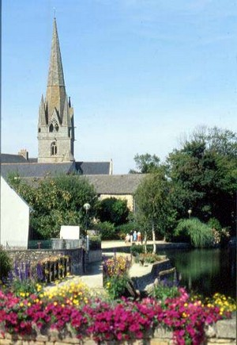
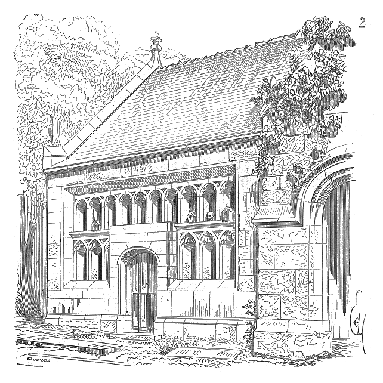

Le Carnaval de Rosporden
Rosporden Carnival
Dialecte de Cornouaille
|
- par Souvestre, dans la revue des Deux Mondes, 1.12.1834; repris dans "Les derniers Bretons" (1836, II,p.215) - par un certain Francès, dans les "Annales de Bretagne, volume XVI (1900), page 384, "Le carnaval de Poullan" (19 lignes chantées par Gaït Didailler). - sous forme de feuilles volantes imprimées chez A. Lédan à Morlaix, chez Blot à Quimper, puis chez Lanoë, successeur de Lédan. C'est le chant cité aux N°264 D et 964 du "Catalogue Ollivier", sous le titre "Recit composet a nevez var sujet un exempl erruet gant tri maleurus". Joseph Ollivier en attribue la composition au barde aveugle Yan Ar Güen (1774-1849). Il est incorporé avec d'autres chants de chez Lédan à un "Recueil de Chansons imprimées" conservé à la Bibliothèque Municipale de Morlaix , N°35 379. - En outre, les Gwerzioù, tome II, de Luzel (P.494, 1874) ont un chant "Ar vaskaradenn" assez proche du présent chant. |
 |
- by Souvestre in the "Revue des Deux Mondes", 1.12.1834; he published it anew in his book "Les derniers Bretons" (1836, II,p.215) - by a named Francès, in "Annales de Bretagne, volume XVI (1900), page 384, "Le carnaval de Poullan" (only 19 lines sung by Margaret Didailler). - as broasides by A. Lédan in Morlaix; by Blot in Quimper; by Lanoë, successor to Lédan. Listed under N°264 D and N°964 in the "List of Breton broadsides" set up by Joseph Ollivier where it is titled "Recit composet a nevez var sujet un exempl erruet gant tri maleurus" and ascribed to the blind bard Yan ar Güen (1774-1849). It is incorporated, along with other Lédan songs, to a "Collection of printed songs" kept at Morlaix Town Library under N° 35 379. - Besides, Luzel's "Gwerzioù", part II (P.494, 1874) include a song, "Ar vaskaradenn", rather similar to the ballad at hand. |
Ton
(Mode hypophrygien mais noté en sol mineur dans le Barzhaz)
| Français | English |
|---|---|
|
1. Il est, le vingt-septième jour du mois de février,
Lors de la mi-carême, dans Rosporden arrivé, En mil quatre cent quatre-vingt-six, écoutez bien, Un désastre lamentable, méditez-le, chrétiens! 2. Trois garçons en goguette s'attardaient au cabaret, Vidant force bouteilles, laissant leur sang s'échauffer. Quand ils eurent le ventre plein et bu tout leur soûl: - Vêtus de peaux de bêtes, allons faire les fous! - 3. Voilà que le troisième, le plus efflanqué des trois, Voyant ses camarades s'éloigner, s'en fut tout droit Pénétrer dans l'ossuaire. Sur sa tête il plaça, Oui, sur sa tête, le crâne d'un mort, vision d'effroi! 4. Il mit dans les orbites du crâne deux lumignons, A travers les ruelles, il courut tel un démon. Si l'enfant qu'il effraye, quand il paraît, s'enfuit. Tous les hommes raisonnables s'écartent eux aussi. 5. D'abord ils circulèrent sans jamais se rencontrer, Puis on les vit ensemble dans un coin de la cité. Les voilà qui délirent, braillant à qui mieux mieux: - Mais où donc es-Tu, viens rire, avec nous Seigneur Dieu! - 6. Dieu, las de leur manège, fit le tonnerre éclater Si fort, que dans la ville toutes les maisons tremblaient, Que tous se recueillirent, car tous étaient certains Que de ce médiocre monde venait alors la fin. 7. Puis on vit le plus maigre, avant de s'aller coucher, Courir au cimetière, rendre le crâne volé, Il lui fit cette invite, en tournant les talons: -Dis, viens donc chez moi, le crâne, demain. Nous souperons.- 8. Rentré dans sa demeure, se mit au lit aussitôt; Dormit comme une souche, si bien que frais et dispos, Quand à l'aube il se lève, qu'au travail il s'en va, Ses désordres de la veille, il ne s'en souvient pas. 9. Il s'arma de sa fourche, et s'en alla travailler, En chantant à tue-tête, sans autrement se soucier. Or, à l'heure où l'on soupe et que tombe la nuit, Des coups forts se font entendre, que l'on frappe à son huis. 10. Notre valet se lève sitôt fait et court ouvrir: Ce qu'il voit l'épouvante et le fait s'évanouir. Deux autres gars s'élancent, voulant le relever, Mais leur propre peur est telle qu'ils meurent foudroyés. 11. Le mort entre et s'avance lentement dans la maison: - N'as-tu pas dit qu'ensemble, tu voulais que nous soupions? Viens donc souper, en marche, nous y serons bientôt. Viens donc t'asseoir à ma table dressée dans mon tombeau...- 12. Hélas! ces mots funèbres à peine étaient prononcés Qu'un hurlement horrible notre jeune homme a poussé, Le spectre parle encore, que sa tête heurta Violemment la dalle froide. Elle s'y fracassa! Traduction Christian Souchon (c) 2008 |
1. Upon the twenty-seventh of the month February
|
(Version en sol mineur)
Cliquer ici pour lire les textes bretons (versions imprimée et manuscrite).
For Breton texts (printed and ms), click here.

|
Une datation difficile
On peut douter de l'antiquité de cette gwerz dont la mélodie sent très fort le 19ème siècle et l'orgue de barbarie. Une version de cette gwerz publiée par Francès dans les "Annales de Bretagne" N°1-4 (nov. 1900 - juillet 1901), page 384, parle de Poullan (sur Mer), à quelques km à l'ouest de Douarnenez. Ce nom correspond sans aucun doute au mystérieux "Bolant". Ce "Carnaval de Poullan" commence ainsi:
Suivant sa pente naturelle, la Villemarqué vieillit l'événement de 2 siècles, parce que, explique-t-il dans ses commentaires demeurés inchangés dans les trois éditions, la tradition attribue ce chant à un Le texte était dû, selon Ollivier, à un compositeur de chansons pour feuilles volantes, le chanteur-poète aveugle trégorrois, bien connu de toute la Basse Bretagne, Jean Le Guen ( Yan ar Guen , 1774 - 1849), si l'on en croit une autre référence du catalogue (N° 940-2), où un titre presque identique à celui de la pièce citée plus haut, à savoir "Recit composet a nevez war sujet un exampl gant tri maleurus" (est-il besoin de traduire?) s'applique à un chant sans doute lui aussi très proche, dont le 13ème et dernier couplet équivaut à une signature:
Les deux références indiquent pour le chant le même timbre. Celui sur lequel se chante "An uzulier" (L'usurier) qui est très certainement la mélodie que l'on trouve dans le Barzhaz, car dans tous les cas la structure du texte est la même: quatrains de 13 pieds. Le point de vue de F. Gourvil Le texte de la feuille volante, publié par l'Imprimerie Lédan de Morlaix, est cité presque in extenso par Francis Gourvil pp. 565-567 de son "La Villemarqué", d'après un petit volume de "Chants religieux" où il côtoie d'autres chants de chez Lédan. Cet ouvrage est conservé à la Bibliothèque de Morlaix. Quatorze ou seize des vingt-deux couplets sont pratiquement les mêmes que dans la version de base du manuscrit de Keransquer (cf texte breton ), si ce n'est que celle-ci ne dit pas en quelle année se déroulèrent les événements qu'elle relate. Cette omission est réparée dans la variante d'où les gallicismes les plus voyants sont déjà expurgés (sans l'aide de l'Abbé Henry ). Cela confirme-t-il l'intuition de Gourvil qui prétend que ces couplets sont "tellement reconnaissables qu'aucun doute ne peut subsister sur la source imprimée et non plus orale de la pièce du Barzhaz Breizh?" Gourvil ne connaissait pas la teneur du manuscrit de Keransquer. Or, quand on examine ce document, on peut douter qu'en prenant ces notes La Villemarqué ait eu le texte de Lédan sous les yeux: Pourquoi le "28 janvier" devient-il le "27 février"? Quel est le sens des différences de mots purement bretons presque systématiques? Plutôt qu'à la lecture d'un texte imprimé, ces notes qui ne comprennent pas de ratures, mais uniquement 9 ajouts et 3 surcharges, ressemblent à la saisie d'un chant sous la dictée d'un locuteur qui connaissait un texte indéniablement apparenté à celui de Lédan, soit parce que l'un est issu de l'autre, soit parce qu'ils procèdent tous deux d'une source commune. La variante fait penser à une première étape vers la version imprimée, en particulier par l'élimination des gallicismes. Lédan:
MS de Keransquer, version de base:
MS de Keransquer, variante:
Barzhaz 1839:
S'agissant de la date de l'évènement, c'est, selon Gourvil, avec raison que le "Récit" de Lédan la situe en 1820. Il ressort en effet d'une étude de Léon Séché, intitulée "Lamartine de 1816 à 1830", qu'Alfred de Musset "En ce temps-là ( vers 1830 ) ...s'amusait... à effrayer les bourgeois de son quartier en se promenant le soir dans la rue avec une tête de mort allumée sur la sienne" On peut être sceptique sur la pertinence de cette "démonstration" qui tend à établir que nous avons avec cette pièce du Barzhaz, "un exemple patent, irrécusable de vieilissement délibéré touchant une pièce dûment datée..."! Comme si placer une chandelle à l'intérieur d'un crâne, comme font les Anglo-Saxons avec une citrouille évidée, à Halloween, témoignait d'une inventivité hors du commun, excluant que Musset ait eu des devanciers! On peut aussi douter qu'en 1830 on ait encore accordé tant de crédit à cette histoire de revenant... La version française d'Emile Souvestre Quant à la version française d' Emile Souvestre parue en 1836, avant le premier Barzhaz, dans le 2ème volume des "Derniers Bretons", pp. 215-220, elle n'indique pas de lieu ni d'année et contient au moins une inexactitude: elle fait tomber "la fin du carême" le 28 février! (les textes bretons parlent de "Meurlarjez", "mardi-gras", le jour précédant le début du carême) On y lit aussi que, des peaux de bêtes utilisées comme déguisements par deux des trois voyous, "s'élevaient des cornes de taureau"; que le jeune profanateur, loin de dormir comme une souche, une fois son forfait accompli, ne put fermer l'œil: une strophe entière est consacrée à son insomnie, une autre au soleil qui brille et aux oiseaux qui chantent toute la journée du lendemain, sans qu'il puisse calmer son inquiétude. Le spectre explique la gravité de son forfait par des considérations théologiques pas très orthodoxes: "Au lieu de prier pour moi, tu m'as fait participer à tes folles profanations; mes tourments s'en sont accrus, et je brûle dans l'enfer à cause de ton crime!" . Tant et si bien que sa malédiction inclut le père et la mère du délinquant, "car ils ont nourri un fils infâme! Deux jours après ce miracle d'exemple, il y avait dans la maison trois bénitiers devant trois châsses, et le père, la mère et le fils dormaient dans celles-ci!" . Souvestre aurait-t-il, lui aussi, puisé à une autre source que la feuille volante? Ou a-t-il seulement donné libre cours à son imagination? La "Mascarade" des "Gwerzioù" de Luzel On trouve chez Luzel une telle source potentielle. Peut-être La Villemarqué la connaissait-elle. En effet, dans les "Notes" qui suivent le chant, il assure qu'il a "entendu raconter aux vieilles gens de Rosporden qu'un jeune homme de cette ville fut trouvé mort, un surlendemain de mardi gras, des suites du carnaval, pendant lequel on l'avait vu parcourir la ville, la tête dans le crâne d'un mort. Mais ils ne disent mot de l'apparition merveilleuse..." Mis à part que la tête de mort y est remplacée par une peau de boeuf ce récit recoupe bien celui de Luzel. R. Largillière (cf. par. suivant) en est persuadé. Il écrit: "La complainte de La Villemarqué est une refonte habile de la chanson populaire "Ar Vaskaradenn", publiée par Luzel, Gwerzioù, II, p.495. Il est de fait que certains éléments du manuscrit de Keransquer, omis par la Villemarqué dans la version publiée dans le "Barzhaz", sont présents chez Luzel: "la guerre à Dieu" de la strophe 3 et l'exhortation aux parents de la strophe 14. Le texte de Luzel contient de terribles blasphèmes proférés par les protagonistes. Ils justifient que le barde en appelle au Saint-Esprit dans le couplet intoductif pour détourner de lui la colère divine. Emile Ernault, qui ne fait jamais de procès d'intention à La Villemarqué, corrige comme suit le jugement de Largillière: "Ceci rappelle la remarque de mes "Etudes vannetaises, Bibliographie", 1894, p.57, sur l'idée que "M. de La Villemarqué devait rencontrer seulement les choses qu'a trouvées plus tard M. Luzel". Celui-ci tenait "La Mascarade" d'un Trécorois qui la savait très imparfaitement et il n'a pu s'en procurer d'autre version. L'histoire racontée est tout-à-fait [le mot est excessif!] différente de celle du "Carnaval de Rosporden", texte cornouaillais dont l'attribution au père Morin doit être une erreur, dit la Note du Barzaz Breiz. Voir "La Villemarqué, sa vie et ses œuvres", Paris, 1926, p. 65." Pour se faire une idée sur la question, le mieux est de se référer au texte lui-même: Maskaradenn . Le "Père Morin" On peut raisonnablement penser que c'est La Villemarqué lui-même qui remplaça dans la variante du manuscrit de Keransquer le nom de "Volant" (7ème ligne, forme [mal] mutée de "Poullan") par celui de "Rosporden". Peut-être a-t-il cru à une erreur de son informateur, alors qu'il connaissait des traditions similaires attachées à cette ville proche de Nizon. Toujours est-il que l'évocation de cette ville justifie, dès la première édition, ses développements sur "les fêtes du carnaval prohibées dès le 5ème siècle...[par] le concile de Tours... et sur les prédicateurs bretons [qui] racontaient qu'un jeune homme ne put parvenir à arracher son masque... qu'un autre fut changé en bête ...qu'un autre fut puni d'une manière plus épouvantable encore" . Cette dernière phrase introduit la présente histoire qui, écrit-il, "fut chantée pour la première fois, par un révérend père capucin qui arrivait de Rosporden et prêchait un soir dans la cathédrale de Kemper" [rédaction de 1839]. Plus loin, dans les "Notes", il indique que "le peuple [en 1845, "la tradition"] donne au moine...le nom de Père Morin (an Tad Morin)". Concernant ce prédicateur, voici ce qu'écrit R. Largillière dans son étude sur "La prophétie de Gwenc'hlan" in "Annales de Bretagne" N° 38-4, 1928, pp. 636 -637 (cité avec un commentaire rectificatif par E. Ernault, chargé de la publication survenue après le décès de Largillière). "On ne sait de lui que ce qu'à raconté Albert Le Grand [au 17ème siècle]: "Du temps de ce Prélat [Jean d'Espervier, évêque de Saint-Malo, 1451-1486], florissait un saint et religieux personnage nommé frère Pierre Morin, originaire de la paroisse de Guinen [Guignen], en ce diocèse, et fut enterré dans le cimetière de ladite paroisse; il était de vie austère et exemplaire, prêchait infatigablement, blâmait le luxe et superfluidité d'habits et à ce propos disait souvent qu'un siècle viendrait si corrompu que les hommes porteraient sur leurs têtes ce qu'ils devraient porter aux pieds et les femmes chausseraient ce qu'elles devraient porter pour habillement de tête. Je ne sais s'il n'entendait pas notre siècle et les calottes de maroquin dont nous usons à présent, et les patins des dames qui ne daignant user de cuir ou de maroquin, couvrent leurs souliers de velours ou de panne, voire y emploient l'or et la broderie. Il prédit aussi l'union du duché de Bretagne à la couronne de France lorsqu'il n'y en avait pas la moindre apparence; car au plus fort des guerres qu'eut le Duc François II avec les rois de France Louis XI et Charles VIII, il prédit qu'en peu d'années on verrait le roi de France et le duc de Bretagne chevaucher en même selle, et sur un même cheval, ce qu'on prenait pour un paradoxe; mais quand la prédiction fut accomplie, par l'heureux mariage de la duchesse Anne au roi Charles VIII, on se souvint de la prédiction du bon saint homme, le sépulcre duquel est tenu en révérence. Et l'on dit que plusieurs s'étant recommandés à lui en leur besoin, s'en sont bien trouvés." La Villemarqué impute au saint homme un langage plus inspiré: "Quand le ciel est rouge le soir,...vous dites: La tempête viendra. Eh bien, regardez du côté du pays des Gaulois ["des Francs" dans l'édition de 1845], l'horizon est en feu. En vérité, en vérité, je vous l'annonce encore un peu de temps et vous verrez le roi de France..." Il s'agit, avec ce démarquage de l'évangile de Jean, d'une tirade patriotique à mettre sur le compte de l'imagination du jeune auteur, qui ne craint pas, si toutefois il connaissait le texte d'Albert Le Grand, d'en modifier complètement le sens en ajoutant, de son propre chef, que l'Union était imposée aux Bretons "en punition de leurs péchés" , tandis que le texte authentique parle, au contraire, "d'heureux mariage". Tad Morin ou Tad Maner? R. Largillière ne doute pas, quant à lui, que La Villemarqué a trouvé le nom de Pierre Morin chez Albert Le Grand, dans le "Catalogue des évêques de Bretagne", cité ci-dessus, qui fait suite à ses "Vies des saints de Bretagne". Puisqu'il nous le montre prêchant dans la cathédrale de Quimper, le jeune barde semble le considérer comme un prédicateur bretonnant, alors que Morin était de Guignen (Ille-et-Vilaine) en pleine zone française. Il est vrai qu'il précise que c'est "le peuple" qui raconte ce récit et l'attribue à "Tad Morin". Les Cornouaillais n'ont sans doute jamais connu le Père Morin et peut-être La Villemarqué a-t-il entendu attribuer la complainte au Père Maunoir ( An Tad Maner , 1606-1683) et se sera-t-il laisser abuser par une lointaine ressemblance de noms. Comme le signale Emile Ernault, La Villemarqué lui-même remarque dans ses "Notes" que l'attribution à Pierre Morin doit être une erreur. Il invoque pour cela le fait que selon lui , "Le Père Morin a dû mourir en 1480" , ce qui ne ressort d'ailleurs nullement du texte d'Albert Le Grand. Réminiscences littéraires Le Barzhaz contient plusieurs autres gwerzioù dont la composition est attribuée de façon hypothétique ou certaine à des ecclésiastiques. En l'occurrence on peut se demander si l'auteur, quel qu'il ait pu être, n'a pas subi l'influence de réminiscences littéraires. En effet cette gwerz rappelle l'histoire de Don Juan , même s'il est d'usage de faire remonter le mythe du "festin de pierre" à un certain Don Juan Tenorio, meurtrier du Commandeur Ulloa dont il avait enlevé la fille, si l'on en croit la "Chronique de Séville", datant elle-même de la fin du 15ème siècle. La carrière littéraire écrite de la légende fut inaugurée entre 1610 et 1625 par Tirso de Molina (1583 - 1648) avec sa pièce "El Burlador de Sevilla" avant de se poursuivre avec Molière, Goldoni, Mozart-Da Ponte et d'innombrables autres auteurs. Le jeune La Villemarqué, celui de 1839, n'hésite pas à proclamer la supériorité de son "Don Juan en sabots [qui] appartient à un peuple dans toute la vigueur de ses mœurs primitives... [qui a affaire non pas à] une statue outragée qui se meut, parle et punit [mais au] mort en personne ... qui se rend à une sacrilège invitation pour tirer vengeance de celui qui a osé profaner son crâne, son crâne baptisé." Dans l'édition de 1839, La Villemarqué ajoutait même: "tout ce qu'il y a de plus sacré pour un Breton après Dieu, la Vierge et les Saints." Il résumait ainsi les quatre strophes (b à e) qui concluent la gwerz dans la version manuscrite du carnet qui désigne les ossements par le mot "relegoù", reliques. Il n'a sans doute pas été très inspiré de les supprimer, privant ainsi le lecteur de naïves et savoureuses admonestations à l'usage des parents qui sont de précieux éléments pour l'histoire des mentalités. Prosper Mérimée et les ossuaires Peut-être le jeune La Villemarqué voulait-il répondre à une critique sévère portée contre un monument propre à la Bretagne, l'ossuaire. Comme on l'a dit dans l'article Pourquoi Guinclan devint Gwenc'hlan" , en mars 1836, l'Inspecteur général des monuments historiques, Prosper Mérimée , avec qui La Villemarqué avait eu maille à partir, publiait des "Notes tirées d'un voyage dans l'ouest de la France où il écrivait à propos de fameux ossuaires: "Il est impossible d'imaginer rien de plus repoussant que ce monceau d'ossements blanchis, jetés pêle-mêle au milieu des orties qui poussent toujours en abondance dans les reliquaires. Bien souvent un zèle empressé n'attend pas l'entier dépouillement du squelette et les lambeaux de chairs puantes attirent les chiens que personne ne prend soin de chasser. D'ailleurs, ces ossuaires n'inspirent aux paysans ni dégoût ni respect. J'en ai vu plusieurs s'y abriter de la pluie, d'autres y manger; quelques-uns attendaient que j'eusse passé pour y faire l'amour avec leurs maîtresses." Loin de vouloir tourner ces monuments en ridicule, Mérimée, conscient de ses responsabilités, voulait en fait, avec ce style qui lui est propre, condamner le laxisme et encourager à leur sauvegarde. Il n'est pas sûr que le jeune chartiste de l'époque l'ait entendu ainsi. |
Difficult dating of the ballad
One may doubt the antiquity of this lament, whose melody sounds very much like a 19th century hurdy-gurdy tune. A version of the same gwerz published by J. Francès in the "Annales de Bretagne" N° 1-4 (Nov. 1900 - July 1901), page 384, mentions Poullan (supra Mare), a few kilometres west of Douarnenez. This place name is evidently identical with the mysterious "Bolant". This "Poullan Carnival" begins thus:
As is his customary trend, La Villemarqué ages the event by two centuries, because, as stated in his comments remained unchanged in the three editions of the Barzhaz, tradition has it that this song was composed by The lyrics are ascribed by Ollivier to a composer of broadside songs, the blind singer-poet, well-known in his native Tréguier area and the rest of Lower Brittany , Jean Le Guen (alias Yan ar Guen , 1774 - 1849), as stated in another item in the catalogue (N° 940-2) whose title "Recit composet a nevez war sujet un exampl gant tri maleurus" (a new narrative about three wretches), certainly points at very similar lyrics. The 13th and last verse names the author of the gwerz:
In both items the vehicle is the same: the tune of the song " An uzulier " (The Usurer), which is likely to be the same as in the Barzhaz, since the verse structure is, here and there, the same: four lines of thirteen syllables. The views of F. Gourvil The broadside song, published by Printer Lédan in Morlaix, is quoted almost completely by Francis Gourvil on pages 565-567 of his "La Villemarqué", after a small handbook of "Religious Hymns" which includes other Lédan songs and is kept at Morlaix Town Library. Fourteen or sixteen of the twenty-two stanzas are analogous to those in the basic version of the song in the Keransquer MS (see Breton text ), but for the fact that no date is assigned to the recorded event. This is amended in the MS variant from which the most conspicuous French loanwords are already expelled (without the help of Abbé Henry ). Does it corroborate Gourvil's statement to the effect that these stanzas are "so recognizable that they must be, without doubt, the printed source for the Barzhaz ballad which, consequently, cannot claim oral origin?" Gourvil was not aware of the Keransquer MS' contents. When perusing this document, one may doubt that La Villemarqué had Lédan's text before him, when he wrote his notes: Why should the "28th January" have become the "27th February"? What is the reason for the differences in almost all corresponding true Breton words? Rather than the transcription of a printed text, these notes that are free of erasures and display only 9 additions and 3 alterations read like jottings of lyrics dictated by someone who unquestionably knew a text tightly related to the Lédan broadside, either because one song proceeds from the other, or because both pieces proceed from a common source. The MS variant looks like a first step towards the final version, especially on account of its expelling most French loanwords: Lédan:
MS de Keransquer, basic version:
MS de Keransquer, variant:
Barzhaz 1839:
As to the date of the event, it is in Gourvil's opinion but correct to set it to 1820, as does Lédan in his "Récit". We read in an essay by Léon Séché, titled "Lamartine from 1816 to 1830", that Alfred de Musset "By then ( ca 1830 ) ...took pleasure... in scaring his bourgeois neighbours out of their wits by wandering in the streets by night, wearing on his head a skull lit by a candle inside ". One may be sceptical about the pertinence of this "demonstration" supposed to "prove" that the present Barzhaz ballad is, " a blatant and indisputable attempt at deliberately ageing a piece whose date of composition is precisely known..." ! As if inserting a candle inside a skull, as do children with carved-out pumpkins at Halloween, would require an outstanding intellect, and Musset could not have imitated some predecessors! One may also doubt that in 1830 this ghost story would have been taken on trust by the public... The French version published by Emile Souvestre The French version of the ballad published by Emile Souvestre in 1836, three years ahead of the first Barzhaz, in the 2nd book of his "Last Bretons", on pp. 215-220, does not quote, for the event, any location or year , but is certainly wrong in dating the "end of the fast of Lent" to the 28th of February! (The Breton text has "Meurlarjez", Shrove Tuesday, which is the last day before Lent). It also states that the hides used as disguise by two of the three revellers, "were topped by bull horns"; that the young profaner, far from sleeping soundly, once he had perpetrated his infamy, could not close an eye: a whole stanza describes his insomnia; another stanza how, the next day, bright sun and chirping birds sharply contrasted with his persistent anxiety. The spectre explains to him the graveness of his fault by unorthodox theological reasons: "Instead of praying for me, you made me partake in your thoughtless profanations. This crime of yours increased the harshness of my punishment in hell!" Therefore he includes the offender's father and mother in a dreadful curse, "since they have raised such shameless son! Two days after this supernatural lecture was delivered, three stoops were placed at the heads of the three coffins, where father, mother and son had been laid." Did Souvestre, too, derive his text from another source than the broadside? Or did he allow his fancy to wander? The "Masquerade" in Luzel's Gwerzioù We find in Luzel's work such possible source. Maybe La Villemarqué knew of it, for in the "Notes" following the song, he declares that he has "heard how old people in Rosporden told of a young man who was found dead two days after Pancake Tuesday, after he had celebrated Carnival by roaming about the streets with his head covered by a death's head. But they did not mention the supernatural apparition..." Except the death's head that is replaced by an ox hide his narrative tallies with that of Luzel.R. Largillière (see below) does not doubt about it. He writes: "La Villemarqué's ballad is a clever remake of the folk song "Maskaradenn" published by Luzel in "Gwerzioù", 2nd Part, p.495" And really, certain elements, omitted by La Villemarqué in the printed "Barzhaz" version, though featured by the Keransquer MS, are present in Luzel's lyrics: the "war against God" in stanza 3 and the exhortation to parents in stanza 14. The poem contains so terrible blasphemies uttered by the protagonists that the bard calls on the Holy-Ghost in the introductive stanza to avert from him God's wrath. Far from sharing Largilliere's opinion, Emile Ernault, who never suspects fraud in La Villemarqué's work, corrects this view as follows: "This reminds me of the remark I made in my "Studies on the Vannes dialect, Bibliographic appendix", 1894, p. 57, to the effect that "M. de La Villemarqué only encountered matters that M. Luzel was to find later on." The latter learned the "Masquerade" from the singing of a Tregor weaver who knew it but roughly and he could not provide another version. The narrative is thoroughly [an exaggerated word!] different from "Rosporden Carnival", a Cornouaille dialect text, that ought to be wrongly ascribed to Father Morin as stated in the Note to the Barzhaz song. See "La Villemarqué, sa vie et ses œuvres", Paris, 1926, p. 65." To form an opinion of your own on the subject, perhaps you had better report to the text itself: Maskaradenn . "Padre Morin" There are reasons to assume that it was La Villemarqué himself who replaced in the MS variant the name "Volant" (in line 7, a wrongly mutated form of "Poullan") with "Rosporden". Maybe he thought the word was distorted by his informant, because he knew of similar traditions linked to the latter town in the vicinity of his native Nizon. Anyway, mentioning this town justifies, in all editions, his going into details about "carnival frolics prohibited as early as in the 5th century...[by] the Council of Tours... and the Breton preachers [who] would recount that a young lad could not remove his mask from his face... and another was changed into a beast... and still another punished in a far more horrible way". This last sentence introduces the present narrative which, so he writes in the 1839 edition, "was sung for the first time in Kemper [Quimper] cathedral by a reverend Capuchin who came from Rosporden." In the ensuing "Notes", he maintains that "people say [changed in 1845 to "tradition has it"] that this monk's name was... Padre Morin (an Tad Morin)". Concerning this preacher, here is what R. Largillière writes in his essay on "Gwenc'hlan's prophecy" in "Annales de Bretagne" N° 38-4, 1928, pp. 636 -637 (edited with corrective comments by E. Ernault, after the death of Largillière). "About Morin we only know what Albert Le Grand wrote [in the 17th century]: "In the days of this prelate [Jean d'Espervier, bishop of Saint-Malo, 1451-1486], prospered a holy and religious person named Brother Pierre Morin, a native of the parish Guinen [Guignen] in his see, who was buried in the churchyard of the said parish. His way of life was austere and exemplary; he was never tired of preaching against luxury and superfluousness in clothing. He complained that the mores were so corrupt that men would readily wear as headdresses their trousers and socks, whereas women would stuff their feet in their bonnets. I wonder if he did not mean the present century, since leather is used nowadays to make caps for men and ladies scorn wearing leather or morocco shoes and put on fine or coarse velvet slippers, sometimes embroidered in gold. He also foretold that the Duchy of Brittany would be united with the Kingdom of France, when there was no harbinger of it: in the thick of the battles fought by Duke Francis II against the kings of France Louis XI and Charles VIII, he announced that, in a few years, the king of France and the duke of Brittany would be seen riding the same horse, sitting in the same saddle, what was at the time considered a paradox. But, once the prediction came true, thanks to the fortunate marriage of Duchess Anne to King Charles VIII, people remembered the good, holy man's prediction, and now his grave is held in due respect. All the more so, as many a Christian who commended himself to him in need, found it beneficial." However La Villemarqué ascribes to the holy preacher a more bombastic discourse: "When the skies redden in the evening... you know that a storm is rising. Now, look towards the land of the Gauls ["of the Franks", in the 1845 edition]: the horizon is aflame. Verily, verily I say unto you, a little while and you shall see the king of France, etc." We are certainly indebted, for this patriotic tirade paraphrasing the Gospel of John, to the wild imaginings of the young author, who does not refrain, if he new the text of Albert Le Grand, from misrepresenting it by adding, on his own authority, that the Union was imposed on the Bretons "as a punishment of their sins" , whilst the true text evokes, on the contrary, " a fortunate marriage". Tad Morin or Tad Maner? R. Largillière considers that La Villemarqué knew the name of Pierre Morin from Albert Le Grand's "Catalogue of the Bishops of Brittany", an appendix to his "Lives of the Breton Saints". Since he stages, him in his comments, preaching in Quimper cathedral, the young author apparently considers that he was able to do it in Breton, whereas Morin was born in Guignen (département Ille-et-Vilaine) far out in the French speaking part of Brittany. But, at the same time, La Villemarqué states that "people" tell this story and ascribe it to "Tad Morin". The chances are that Cornouaille people never heard of Padre Morin and that La Villemarqué mistook Padre Maunoir (known in Breton as "Tad Maner" , 1606-1683) for "Tad Morin", as both names are roughly similar. As mentioned by Emile Ernault, La Villemarqué himself stresses in his "Notes" that the ascription to Pierre Morin should be erroneous, since in his opinion , "Padre Morin very likely died in 1480" , a detail that, by the way is mentioned nowhere in Albert Le Grand's text. Literary reminiscences The Barzhaz includes many more gwerzioù allegedly or definitely ascribed to clerics. In the present instance, we may wonder if the author, whoever he may have been, was not influenced by literary reminiscences. The gwerz reminds, in fact, of Don Juan 's story, even if the myth of the "feast of stone" is usually traced back to a certain Don Juan Tenorio, murderer of Commander Ulloa, whose daughter he had abducted, as stated in the "Chronicle of Seville", also dating from the end of the 15th century. The written career of the tale began between 1610 and 1625, when Tirso de Molina (1583 - 1648) used it for his play "El Burlador de Sevilla", before it was picked up by Molière, Goldoni, Mozart-Da Ponte and countless other authors. The young La Villemarqué of 1839 goes so far as to proclaim the superiority of his "clogged Don Juan [who] was born among a people in full possession of their uncouth habits... [and was faced], instead of a moving, speaking and punishing statue in wrath, with the dead man in person...who accepted his sacrilegious invitation to take revenge on the profaner of his skull and christened brow." In the 1839 edition, La Villemarqué added: "which a Breton holds most sacred, after God, the Holy Virgin and the Saints." This sentence summed up the four stanzas (b to e) concluding the gwerz in the handwritten copybook that names the bones "relegoù", "relics". He certainly was ill-advised when he removed them from the printed poem, thus denying access to the naive and spicy admonishments to parents, which are precious data for historians focussing on mentalities. Prosper Mérimée and the "ossuary issue" Maybe this tirade was La Villemarqué's answer to severe criticisms against a monument typical for Brittany, the ossuary. As mentioned in the article Why did Gwinclan become Gwenc'hlan?" , in March 1836, the General Inspector of Historical Monuments, Prosper Mérimée , with whom La Villemarqué had an argument, published a vengeful "Record of a trip through Western France" where he addressed the famous ossuary: "One might hardly think of anything more repulsive than these bleached bones, any old how heaped up amidst nettles that thrive as a rule in these relic shrines. Very often hurried zeal does not allow the skeletons to be completely stripped from stinking shreds of flesh over which dogs fight and no one makes attempts to drive them away. Besides the ossuary inspires in the peasants, neither repulsion, nor respect. I often saw it used as shelter against the rain, or as luncheon place, if not as recess for couples who waited till I went, to resume their love-making." In fact Mérimée's intention was far from ridiculing these monuments. Well aware of his liabilities as a minister, he wanted, in this vigorous style of his own, to condemn carelessness and prevent them from decay. Of course, it is not sure if the then young scholar who opposed him understood this Philippic that way. |
.
Version du Manuscrit de Keransker
Keransquer MS Version
| Français | Français | English | English |
|---|---|---|---|
|
P. 21
Les trois misérables a. Approchez tous jeunes gens, pour entendre L'horrible aventure qui vous servira d'exemple Survenue récemment a trois jeunes écervelés Qui ont laissé le diable entrer dans leur cœur. (1) Il est, le vingt-septième jour du mois de février, A la mi-carême, plus précisément, Elle advint dans la ville, la ville de Bolant , Un exemple à méditer à tous les chrétiens! (2) Trois garçons étaient au cabaret, A se faire servir les meilleures liqueurs. Quand ils eurent le ventre plein, ils ont décidé Qu'ils iraient tous courir après s'être masqués! (3) Voilà que le plus misérable des trois, Voyant ses camarades s'éloigner Eut l'idée d'aller à l'ossuaire. Et il mit sa tête, Dans le crâne d'un mort, vision d'effroi! P. 22 (4) Dans les orbites il alluma des lumignons; A travers les ruelles, il se mit à courir. Les enfants accouraient vers lui de tous les côtés. Tandis que les gens raisonnables s'écartaient de lui. (5) D'abord ils circulèrent sans jamais se rencontrer, Puis on les vit ensemble dans un coin de la cité. Les voilà qui mettent au défit les saints et les anges, Même notre Seigneur de leur faire la guerre! (6) Dieu, las de leur manège, fit retentir le tonnerre Si fort que toutes les maisons tremblaient, Et que tous les habitants se recueillirent, Certains que la fin du monde était arrivée. (7) Le misérable s'en fut rendre à l'ossuaire, Le crâne qu'il avait pris pour son exploit. Il alla jusqu'à l'inviter, en tournant les talons, A venir dîner chez lui un de ces soirs. (8) Rentré dans sa demeure, Il se mit au lit pour le reste de la nuit. Il ne dit rien aux autres occupants du logis Confiant en sa hardiesse et son effronterie. P. 23 (9) Le lendemain, en se levant pour aller travailler, Il ne se souciait plus de son détestable forfait. Or, à l'heure où l'on passe à table pour dîner, Voilà que le mort vint frapper à la porte. (10) Celui qui se leva pour aller ouvrir Fut saisi d'épouvante et tomba en syncope. |
Deux autres accourent pour le relever, Mais de saisissement, ils meurent, foudroyés. (11) Le mort s'avance, bien décidé à entrer - Continuez de dîner, je ne fais que passer C'est à vous, mon compère dépravé, que j'en veux Car vous me voyez dans une situation périlleuse! - b. Tous ses ossements avaient, Dieu le voulait ainsi, Repris la place qu'ils occupaient de son vivant. - Au lieu de prier pour moi, vous aggravez ma peine- Puis il le mis en pièces. Mon Dieu, quelle fin! c. Voilà donc quatre morts dans la même maison, Et pour eux prions Dieu et la Vierge Marie! Le jeune homme n'avait que vingt-cinq ans. Je vous prie, jeunes gens, de méditer son cas. d. Evitez les dangers des mauvaises fréquentations Qui causent mille malheurs, mille méchancetés. Quand ils furent témoins de son châtiment Les autres prirent leurs jambes à leur cou Et firent pénitence pour le reste de leurs jours. e. Pères et mères qui élevez des enfants Pensez à les corriger et les instruire, c'est sagesse! Si vous n'y veillez pas, tôt ou tard, Vous-mêmes ici, ou eux, le regretterez amèrement. Variante (1.b) Le vingt-sept février Mille six cent quatre vingt six Une chose épouvantable eut lieu à Rosporden Il faut la méditer, hélas, vous les chrétiens! (2.b) Trois jeunes en goguette étaient au cabaret Le sang tout bouillant du vin qu'ils venaient de boire, Quand ils eurent mangé et bû tout leur soûl: - Allons quérir des peaux, pardieu, des peaux de bêtes! - Retirons nos effets et revêtons ces peaux! (3.2) Sa tête dans un crâne, y mit un lumignon. (4.2) A hurler et bondir ils se mirent tous trois (5.4) Disant "Dieu, y es-Tu? Admire le spectacle (7.4) O crâne viens chez moi, je t'attends à dîner (9.3) Et non plus qu'aux ébats, toute la nuit ouverte (11.b) Le mort se mit en marche et décida d'entrer: - Me voilà. Je suis prêt à dîner avec toi Mais, compère, on n'est point à l'aise en ce lieu-ci, Allons jusqu'à ma tombe où la table est dressée! - (12.b) Il n'avait pas terminé son discours Que le jeune hurlait, en proie à l'épouvante Que le jeune hurlait, en proie à l'épouvante Le revenant venait de lui briser le crâne. |
P. 21
The three wretches a. Come near young people. You shall hear A dreadful story to ponder over, It happened recently to three hare-brains Who allowed the devil to get hold of their souls. (1) On the twentieth of February, On the third Thursday in Lent, It happened in Bolant town. All Christians should meditate on it! (2) Three young lads were at an inn, And they ordered the strongest liquors. When they had eaten and drunk their fill They decided to run about town with masks on! (3) Now the third and the most wretched lad, Seeing his mates going away from him Put into his head to go to the ossuary, And tuck his head into a skull, a dreadful sight! P. 22 (4) The eye sockets he fitted with lit tapers; And set to running about the streets. Crowds of children approached to see him. Whereas thoughtful people kept clear. (5) First, the three roamed the streets separately, Then, they joined together in a corner of the town, And were heard challenging Saints and Church, Even Our Lord, to wage war on them! (6) God, tired of their game, sent a thunderbolt That caused all houses to quiver, And all dwellers to gather their inmost thoughts Fearing lest Doomsday had come. (7) The wretch repaired to the ossuary, And put back the skull used for his stunt But was so impertinent as to invite the dead man, To come and dine with him in his house. (8) Back home, he went to bed, Where he slept sound the rest of the night. He did not breathe a word to the others Confident that his infamy would remain unpunished. P. 23 (9) Next day he got up and went to work And did not worry about his dreadful deed. But at the late hour when people had dinner, The dead man came and thumped on the door. (10) The one who rose to open Was seized with fright and he fainted. |
Two other men hurried to help him up, But they died, awe-stricken, instantly. (11) The dead man stalked in, resolutely - Go on with your dinner, lads, I won't interfere! Here's my wretched mate! I came in account of you, Who put me in danger! - b. All his bones had, God willing, got back, To where they belonged in his lifetime. - Far from praying for me, you increased my grief- He squeezed the breath out of him, a horrid death! c. Now, for these four dead in the same house, Let us pray God and the Virgin Mary! The lad was only twenty-five years old. Pray, youths, meditate on his story! d. Shun the hazards of dubious company Causing only evil, full of maliciousness! When they saw his punishment They others took to their heels And they repented for the rest of their lives. e. Fathers and mothers who raise children See that you mend their ways and teach them wisely! If you don't, sooner or later, you or they Will regret it bitterly! Variant (1.b) On the twenty-seventh of February Sixteen hundred eighty-six An appalling thing happened in Rosporden Christians, you should ponder over it! (2.b) Three young revellers were sitting at an inn Their bood was boiling with the wine they drank. When they had eaten and drunk their fill: - Let's fetch hides, by God! Hides of beasts! - Let's strip off our clothes and don these hides! (3.2) His head in this skull, fit there a taper. (4.2) Suddenly they yelled and jumped, all of them, (5.4) Saying "God, are You here? look at the show! (7.4) Skull, come to my house, I ask you to dinner. (9.3) Not to frolics, open all through the night. (11.b) The dead man rose and requested entry: - Here I am. I've come to have dinner with you But, friend, I don't feel at ease here, Let us go to my grave where a table is laid! - (12.b) He had not finished his speech When the lad gave a loud scream of anguish When the lad gave a loud scream of anguish The ghost had smashed his head to pieces. |

Arrangement Chr. Souchon
Texte français de La Villemarqué lu par André MAURICE
accompagné par les Kanerien Bro Leon, 1965